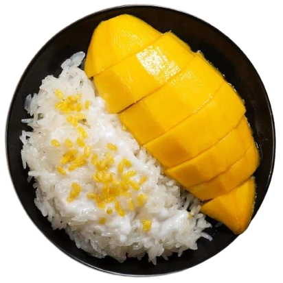
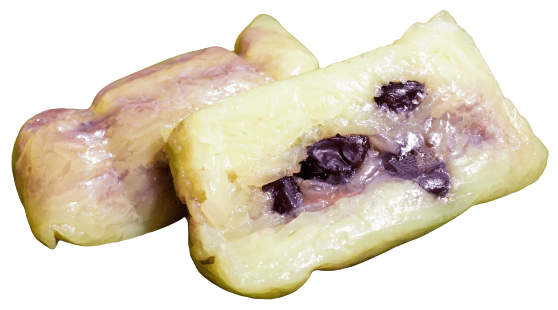
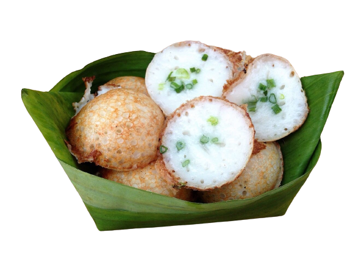
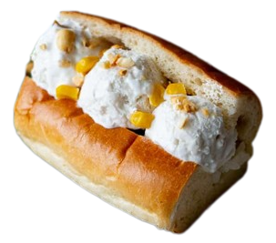
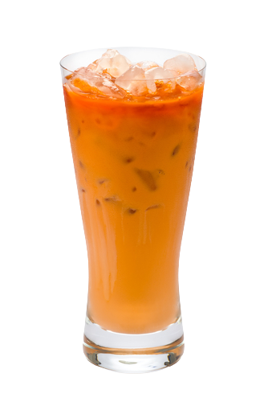

TOP PICK MENU
Mango sticky rice
ข้าวเหนียวมะม่วง
Especially popular during the mango season in Thailand, which typically occurs from April to June when mangoes are at their ripest and most flavorful.
Khao Tom Mud
ข้าวต้มมัด
Traditional Thai dessert made from sticky rice, coconut milk, and a filling, often banana or other ingredients.
Mor Kaeng

ขนมหม้อแกง
This dessert is popular in Thai cuisine and is often enjoyed during special occasions, family gatherings, and as a sweet treat.
Kanom Krok
ขนมครก
Made from a simple batter of rice flour and coconut milk, cooked into small, crispy, and creamy pancakes. Its sweet and coconutty flavor makes it a favorite treat in Thailand.
Coconut Icecream
ไอศครีมกะทิ
Known as "I-Tim Kati" in Thai, is a delightful frozen dessert that's popular in Thailand and other Southeast Asian countries.
Thai tea
ชาไทย
Sweet and creamy iced tea beverage made from Ceylon black tea, milk, and sugar, known for its unique flavor, vibrant orange color, and cultural significance in Thailand.